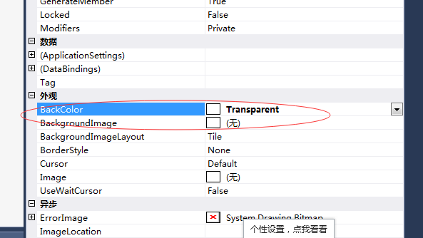

首先在Form中添加一个控件，然后将控件的背景BackColor设置成透明
、
然后分别设置控件的Image： Image image = Image.FromFile(UserLoginInfor.LoginInfor.userIco);
获取image的width、height：width= image.width、height=image.height
然后实现该功能，具体代码如下：（pictureBox1：控件的名称）
Image image = Image.FromFile(UserLoginInfor.LoginInfor.userIco);
this.pictureBox1.Image = CutEllipse(Image.FromFile(UserLoginInfor.LoginInfor.userIco), new Rectangle(0, 0,image .Width, image .Height), new Size(image .Width, image .Height));最后创建一个自定义方法CutEllipse：
private Image CutEllipse(Image img, Rectangle rec, Size size)
{
Bitmap bitmap = new Bitmap(size.Width, size.Height);
using (Graphics g = Graphics.FromImage(bitmap))
{
using (TextureBrush br = new TextureBrush(img, System.Drawing.Drawing2D.WrapMode.Clamp, rec))
{
br.ScaleTransform(bitmap.Width / (float)rec.Width, bitmap.Height / (float)rec.Height);
g.SmoothingMode = System.Drawing.Drawing2D.SmoothingMode.HighQuality;
g.FillEllipse(br, new Rectangle(Point.Empty, size));
}
}
return bitmap;
}
参考网址：https://q.cnblogs.com/q/11565/